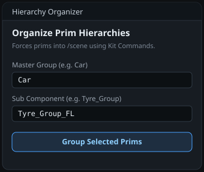
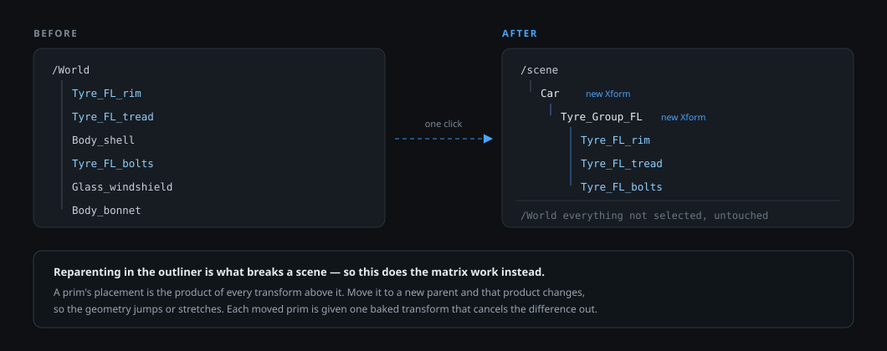

Groups
Created only if missing
The master group and the sub-group are made as Xform prims.
Either name on its own is enough — give only a master and the selection
lands directly in it.
Omniverse Kit · OpenUSD · Python
Drag prims onto a new parent in the Stage outliner and they jump, or stretch. Nothing is broken: a prim's position is the product of every transform above it, and you just changed that product. This is a one-button Kit extension that does the arithmetic for you — pick the prims, name two levels, and they land in a clean group exactly where they already were.

See it run
Recorded in Omniverse Composer and posted on LinkedIn, so the card beside this is the post itself rather than a copy of the video — the write-up and the comments come with it.
It plays in place — no need to leave the page.
What one click does
The destination is /scene/<Master>/<Sub>. Both levels are
created only if they are missing, and a group that already exists is left
exactly where it is rather than being dragged to the new selection.

Groups
The master group and the sub-group are made as Xform prims.
Either name on its own is enough — give only a master and the selection
lands directly in it.
The move
CreatePrim and MovePrim rather than direct
stage edits, so the outliner, the layer stack and the undo queue all
see what happened. Leaf names are carried over as they are.
The arithmetic
The new group takes the world matrix of the first prim in the selection. Every moved prim then gets one baked transform — its old world matrix times the group's inverse — which puts it back exactly where it was.
Rigs
A skinned mesh is posed by its skeleton, not by its own transform, so
moving it alone snaps it back to bind pose. Each
SkelRoot in the selection is baked once, before any
matrix is read.
Where the edges are
This is a layout and set-dressing tool. The honest limits are worth knowing before you run it on something precious.
Each moved prim's transform stack is replaced by a single baked matrix, so authored translate, rotate and scale channels do not survive the move. That is the trade for never seeing a shift — and it is what freeze means in the tool's own description.
Transforms are read at the default time code only. A prim with animated transform values will lose those samples, which is why this belongs in layout rather than on a shot that is already moving.
The create and the move are Kit commands and undo cleanly. The baked transforms and the skinning bake are direct USD writes and do not, so a big pass is worth a save first.
Two selected prims with the same leaf name will collide in the destination group. Nothing checks for it, so rename before grouping if your selection spans several assemblies.
Next
This one tidies the stage. The Maya bridge gets a finished shot into it, and the configurator turns that scene into something a customer can drive from a browser.